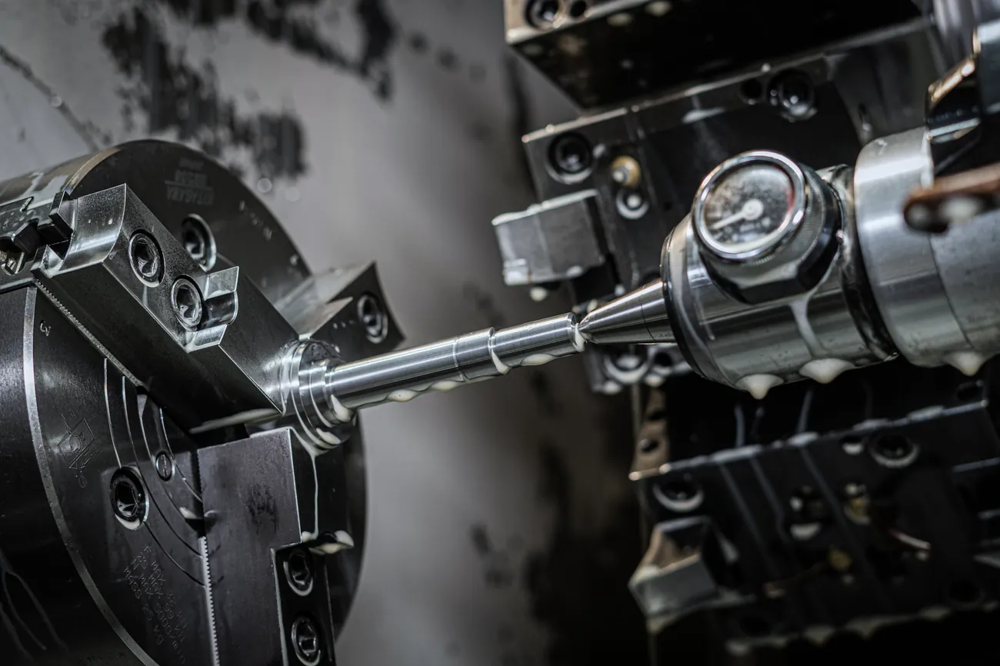
NC旋盤加工
CNC旋盤を中心に、試作から量産まで、丸物部品の加工を承ります。
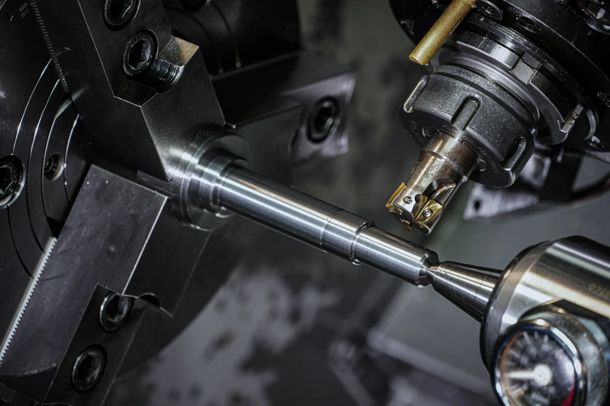
01 / OUR PHILOSOPHY
部品に求められる精度は、完成品の信頼そのものです。図面の意図を読み解き、一つひとつの工程と丁寧に向き合います。
CNC旋盤を中心とした切削加工で、お客様のものづくりを支えます。品質や納期、コストのことでお困りの際は、お気軽にご相談ください。
会社概要を見る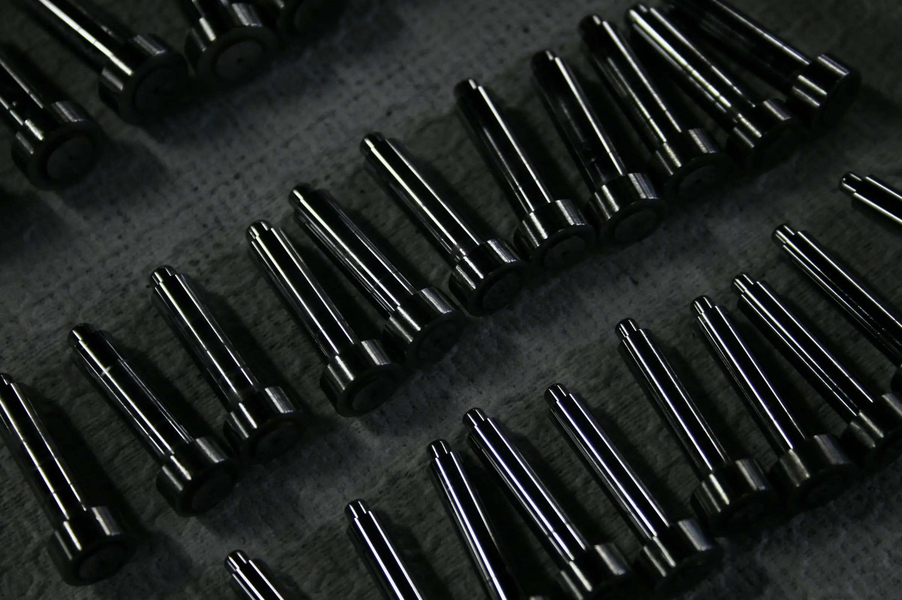
一つの部品が、
ものづくりの信頼を支える。
02 / CAPABILITIES

CNC旋盤を中心に、試作から量産まで、丸物部品の加工を承ります。
平面や溝、複雑な形状の部品まで、旋盤加工とあわせてご相談いただけます。
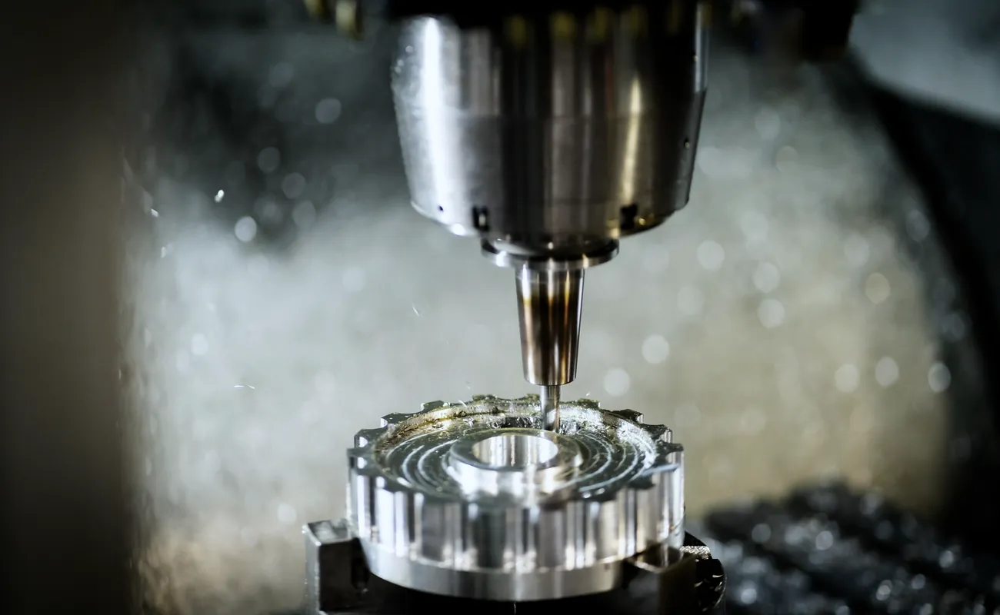
熱処理後の部品に求められる寸法と面の仕上げに対応します。加工が難しい材質についても、まずはご相談ください。
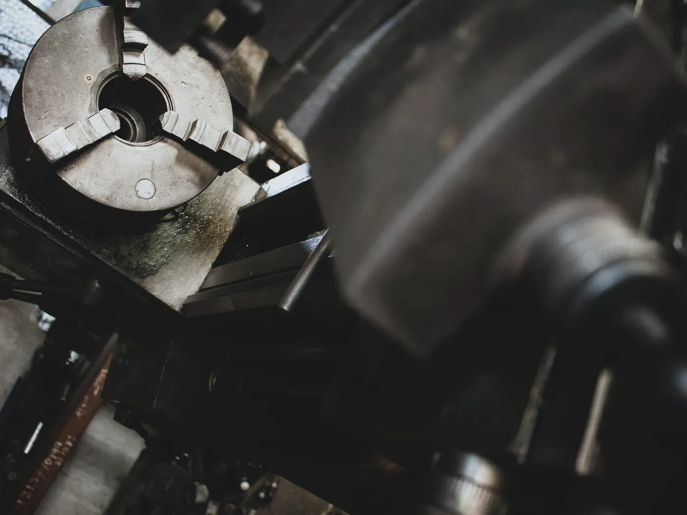
試作の一点から量産まで、部品の用途に合わせた切削加工をご提案します。
03 / MATERIAL EXPERTISE
炭素鋼から工具鋼、軸受鋼まで。
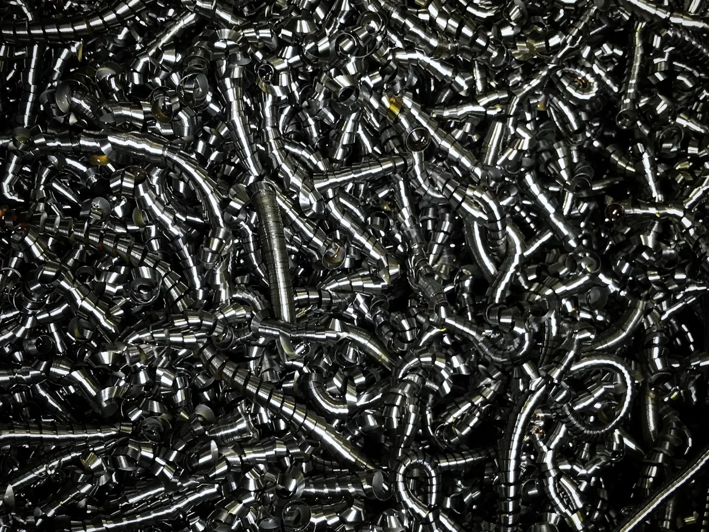
耐食性が求められる部品に。
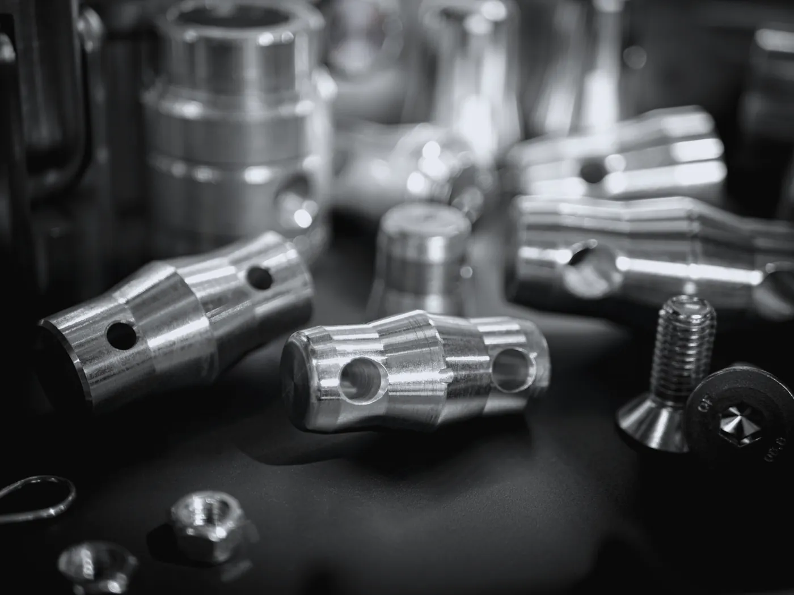
軽さと加工性を活かした部品に。
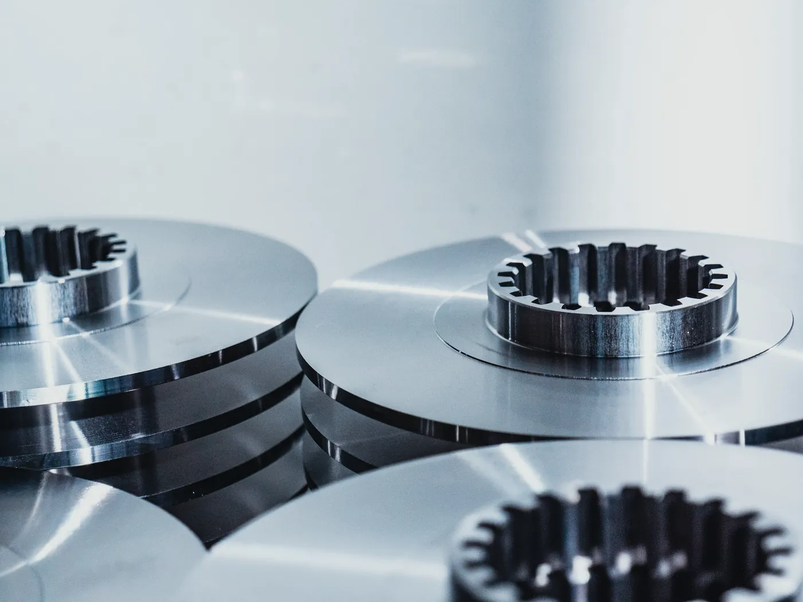
導電性や熱伝導性が求められる部品に。
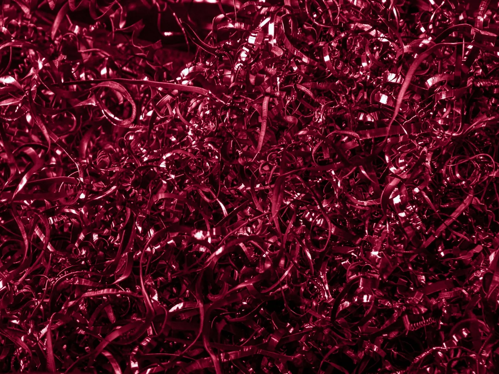
上記以外の材質についても、お気軽にご相談ください。
04 / EQUIPMENT
掲載している設備構成は、デザインを示すためのサンプルです。
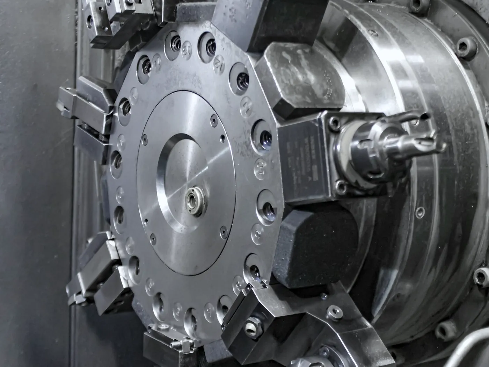
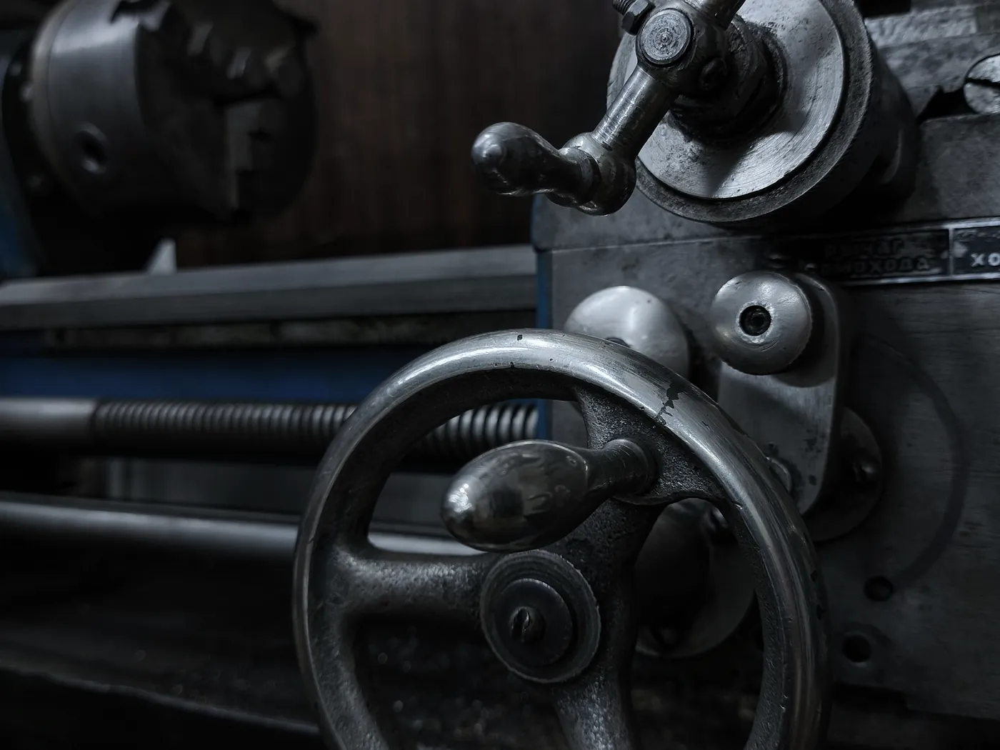
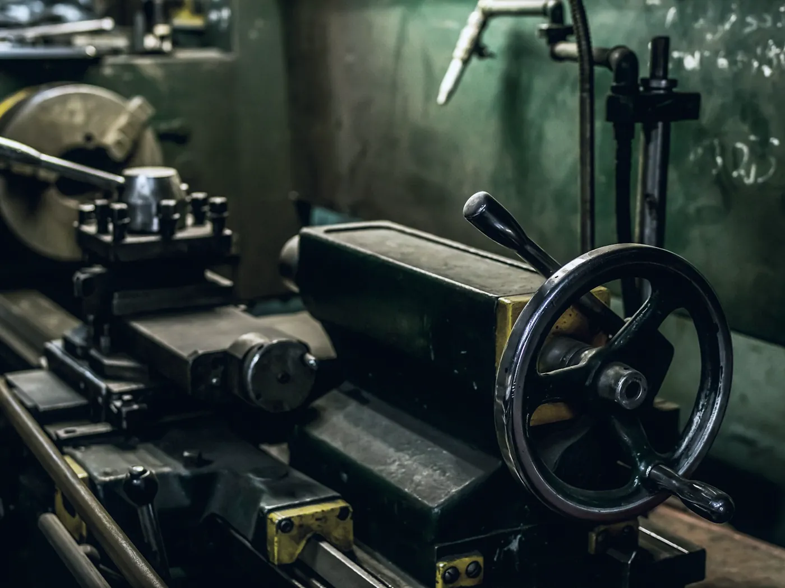
| 設備名 | 用途 |
|---|---|
| NC旋盤 | 丸物部品の量産加工 |
| NC複合旋盤 | 旋削とフライスの複合加工 |
| NCフライス盤 | 平面・溝・形状の加工 |
| 汎用旋盤 | 単品・試作の加工 |
05 / SELECTED WORKS
掲載写真はデザインを示すためのイメージです。実際の製品や取引を示すものではありません。
06 / COMPANY
Precision Worksは、デザインを示すために設定した架空の企業です。社名、所在地、設備、事例はすべてサンプルであり、実在の企業や取引を示すものではありません。
07 / CONTACT
製品の品質や納期、コストのことでお困りの際は、お気軽にご相談ください。試作から量産まで承ります。
こちらは見本の画面のため、実際には送信されていません。